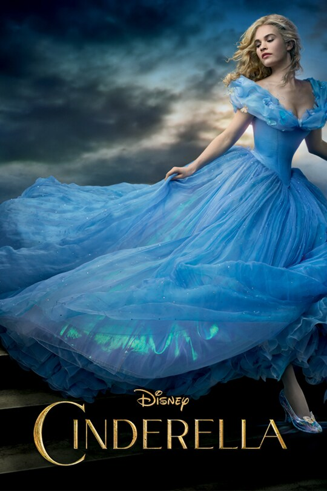

Beauty and the Beast (2017) is a live-action musical romantic fantasy film directed by Bill Condon.
A remake of Disney's 1991 animated classic, it stars Emma Watson as Belle, a bright and independent
young woman, and Dan Stevens as the Beast, a prince cursed to live as a monstrous creature.
The story follows Belle as she becomes a prisoner in the Beast's enchanted castle, where she
befriends the castle's magical staff and looks beyond the Beast's exterior to discover the kind
heart within. The film features iconic songs from the original, along with new compositions by
Alan Menken and Tim Rice, and explores themes of love, redemption, and the transformative power of kindness.
Cinderella (2015)

Cinderella (2015) is a live-action romantic fantasy film directed by Kenneth Branagh.
It stars Lily James as Ella, a kind-hearted young woman who, after her father's death,
is mistreated by her cruel stepmother, Lady Tremaine (Cate Blanchett), and stepsisters.
Despite her hardships, Ella remains compassionate and courageous. Her life changes when
she meets a charming stranger in the forest, who turns out to be Prince Kit (Richard Madden).
With the magical assistance of her Fairy Godmother (Helena Bonham Carter), Ella attends the
royal ball, leading to a transformative journey of love and self-discovery.
Dr Dolittle 2 (2001)
Dr. Dolittle 2 (2001) is a family comedy directed by Steve Carr and stars Eddie Murphy
as Dr. John Dolittle, a veterinarian who can communicate with animals. In this sequel,
Dr. Dolittle is enlisted by forest creatures to help save their habitat from destruction by
developers. The key to preserving the forest lies in pairing a solitary endangered bear named
Ava with a mate, Bruno—a performing circus bear more accustomed to fast food than the wild.
Dolittle must teach Bruno how to survive in the wilderness and woo Ava, all within a tight
deadline to prevent the forest's demolition.
The Little Mermaid (2023)
The Little Mermaid (2023) is a live-action musical fantasy film directed by Rob Marshall.
It reimagines Disney's 1989 animated classic, itself inspired by Hans Christian Andersen's
1837 fairy tale. The story follows Ariel, a spirited young mermaid portrayed by Halle Bailey,
who dreams of experiencing life on land. After rescuing Prince Eric (Jonah Hauer-King) from a
shipwreck, Ariel makes a perilous deal with the sea witch Ursula (Melissa McCarthy) to become human,
sacrificing her voice in the process. The film explores themes of identity, love, and self-discovery,
featuring a blend of beloved original songs
Avatar 2 (2022)
Avatar: The Way of Water (2022) is a science fiction epic directed by James Cameron and
the sequel to Avatar (2009). Set more than a decade after the original film, it follows
Jake Sully and Neytiri as they raise their family on Pandora. When a renewed human threat
emerges, the family seeks refuge with the oceanic Metkayina clan. The film explores themes
of family, survival, and the connection between nature and the Na’vi, all set against stunning
underwater visuals and advanced motion capture technology.